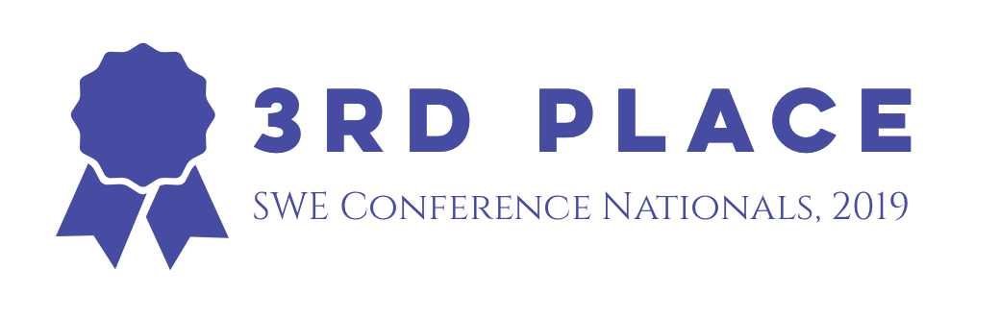
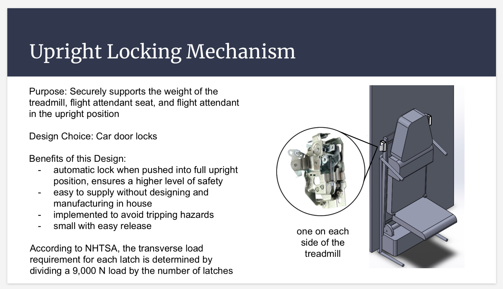

Team Tech is a faction of the Society of Women Engineers that designs and prototypes a product for
industry use. In 2018, Team Tech partnered with Boeing to develop a stowable treadmill for
passengers with Deep Vein Thrombosis, who are at risk of developing blood clots if they are seated
for too long in flight. The device doubled as an emergency seat for flight attendants and was
required to meet industry safety standards.

Professional Research Lead
As a research lead, I organized team members and managed research on the economic,
environmental, and health effects of our project. I was responsible for reporting
back to other team leads on the progress of our research. I also conducted research
and compiled a technical report for Boeing.

Storage and Deployment
In storage and deployment, I researched, designed, and built components of the
treadmill that allowed it to be stored and deployed safely and easily. I worked
primarily with locking mechanisms, employing car door locks to secure the treadmill
against the wall of the aircraft and support the weight of a flight attendant seat
per emergency protocol.